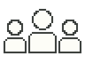

棒をタップして詳細を確認・横スクロール可
今のペースでの本日の見込み
2日間の合計見込み
10/31・11/1とも9:00〜16:30の450分が基準です。1日目は翌日も同じペース、2日目は前日実績＋本日の見込みです。
本日の入場者数を予測してください。名前と入力時刻を記録し、保存後に前の人の予測を表示します。
確定すると、その日の追加・取消を停止します。確定解除で再開できます。記録は削除しません。
全日程終了・サマリー
担当を変更しても、本日の累計は継続します。
PNG・JPEG・WebP・GIF、10MBまで。画像はこの端末内に保存します。選び直すと保存済みの画像を差し替えます。
メイン画面の集計単位を反映します。
誤入力は対象の「取消」から取り消し、正しいボタンを押し直してください。元記録と取消記録は残ります。
記録はこのブラウザに保存されます。端末の故障やブラウザのデータ消去に備え、定期的にJSONを保存してください。
JSONには予測と確定・解除の履歴も含まれます。予測は「予測 CSV」でも書き出せます。書出しには担当者名・メモも含まれます。保存先の扱いにご注意ください。シフト表の画像はJSONに含まれないため、元画像を保管してください。
「山本を呼ぶ」の送信先は設定済みです。この端末に合言葉だけ保存します。
選んだ配色はこの端末に保存されます。記録の内容は変わりません。